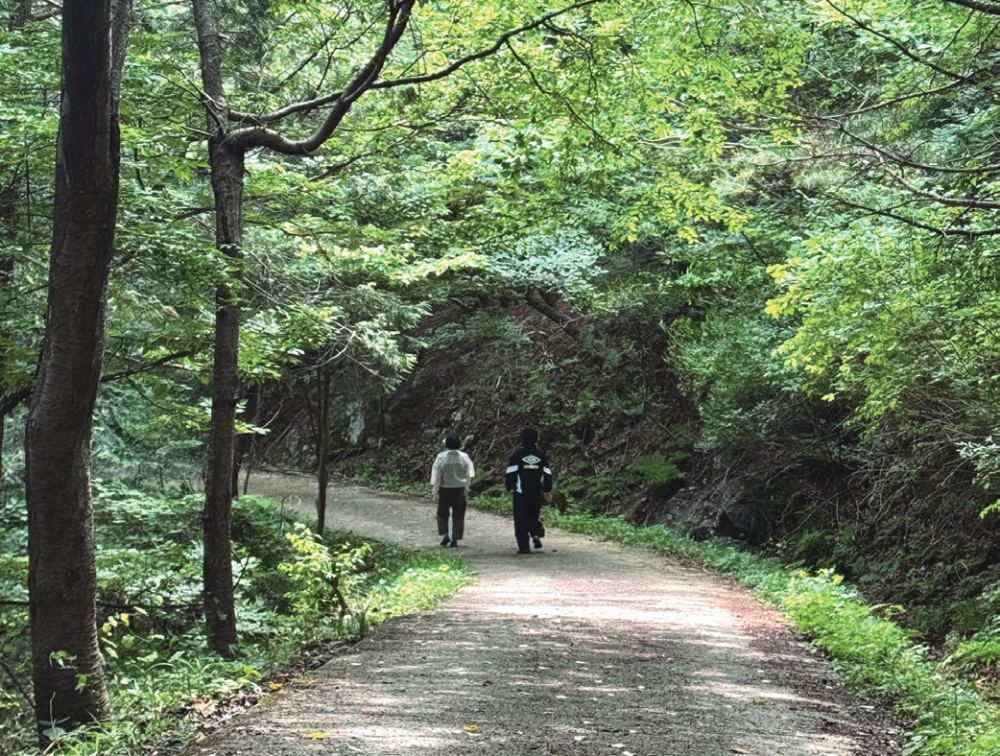
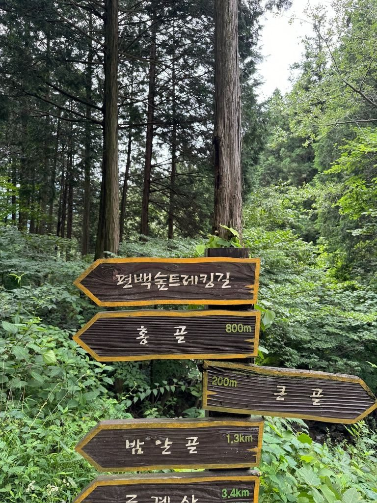
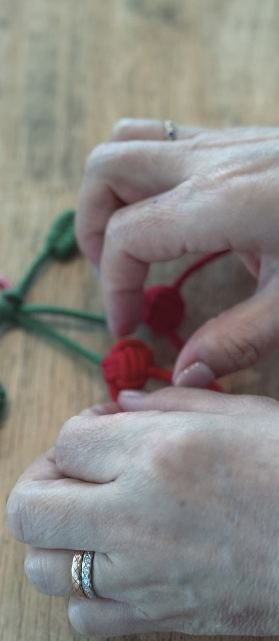
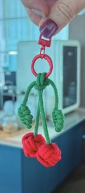
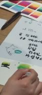
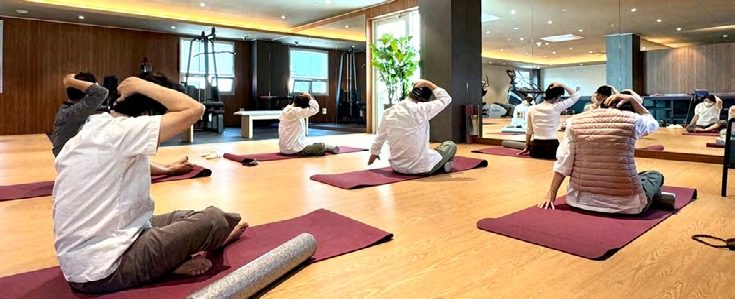

입원하지 않아도 프로그램에 참여할 수 있나요?
입원하지 않으셔도 통원하시면서 참여하실 수 있습니다. 원내에서는 낮 손작업, 저녁 요가·라인댄스·명상·캘리그라피가 이어집니다. 오후의 암재활 운동치료는 프로그램이 아니라 치료로 따로 운영합니다. 암기공은 매달 열립니다. 편백숲 트레킹은 컨디션이 허락하는 날 함께 나섭니다.

- 대상
- 입원·외래(통원) 환자분 모두
- 장소
- 암재활 운동치료·요가·라인댄스는 3층 재활치료실 · 손작업·명상·암기공·주말영화는 10층 스카이라운지와 힐링프로그램실
- 시간대
- 손작업은 낮 1시 30분 · 암재활 운동치료는 오후 2시 30분부터 한 시간 · 저녁 프로그램은 6시 30분과 6시 40분 · 주말영화는 낮 1시
- 요일·일자
- 월별 공지로 안내합니다. 이달의 요일표는 소식의 2026년 10월 프로그램 안내에 있습니다.
- 신청·문의
- 카카오톡 채널 · 병동 간호사실(입원) · 원내 상담실(외래) · 062-439-1000
편백숲 트레킹
컨디션이 허락하는 날 함께 나서는 걷기입니다.

참여를 원하시는 분들과 일정을 맞춰 진행하고, 그날의 몸 상태에 따라 거리를 조절합니다. 처음엔 짧게 걷다가 조금씩 늘려 가시는 분들이 많습니다. 코스 난이도는 고르실 수 있습니다. 나란히 걷다 보면 어느새 이웃이 되고, 내려오는 길엔 이야기가 남습니다.
낮, 손작업
손끝에 집중하는 시간입니다.



손작업은 낮 1시 30분에 10층 스카이라운지에서 열립니다. 환자분들의 요청으로 시작한 뜨개공방이 있습니다. 매듭공예에서는 팔찌와 키링을 엮고, 캘리그라피에서는 마음에 담아 둔 문장을 손거울에 새깁니다. 다도와 천연체험공방도 10층 스카이라운지에서 열립니다. 한 코, 한 매듭, 한 획에 집중하는 동안 생각이 단순해지고 호흡이 고릅니다. 완성한 작품은 병실 머리맡에, 가방 한쪽에, 선물로 건넨 가족의 손에 남습니다.
암재활 운동치료는 치료입니다
근력·균형·일상 동작을 익히는 한 시간입니다.

암재활 운동치료는 힐링 프로그램과 별개로, 3층 재활치료실에서 하는 운동 치료입니다. 오후 2시 30분부터 한 시간 동안 진행합니다. 근력, 균형, 일상 동작을 익힙니다. 퇴원 뒤 집에서도 하실 수 있는 동작입니다. 수술 부위에 따라 동작을 바꿉니다. 처음 오시는 분은 수술 부위와 수술 날짜만 말씀해 주시면 됩니다. 주치의와 함께 정한 범위 안에서 암재활 운동치료를 무리 없이 하실 수 있도록 돕습니다. 요일은 월별 안내를 확인해 주세요.
저녁, 움직임과 마음
요가·라인댄스·명상·캘리그라피가 저녁 시간에 이어집니다.

요가는 저녁 6시 40분에 3층 재활치료실에서 진행합니다. 외래 환자분들도 저녁 시간에 참여하실 수 있습니다. 라인댄스는 저녁 6시 30분에 3층 재활치료실에서 진행합니다. 캘리그라피는 저녁 6시 30분에 10층 스카이라운지에서 진행합니다. 명상은 저녁 6시 30분에 10층 힐링프로그램실에서 김성훈 수석병원장이 직접 진행합니다.
암기공, 암을 이기는 공부
진료실에서 묻지 못한 것을 천천히 배우는 시간입니다.
'암기공'은 암을 이기는 공부의 줄임말입니다. 진료실에서는 시간이 짧아 묻지 못했던 것들을 강의실에서 천천히 배웁니다. 김성훈 수석병원장이 직접 진행하며, 지금 받고 계신 치료가 어떤 원리인지 하나하나 설명해 드립니다. 10층 힐링프로그램실에서 매달 열리는 배움의 시간에 편하게 와 주세요. 이달의 일자와 주제는 소식의 월별 프로그램 공지에 있습니다.
주말영화
주말영화는 토·일 낮 1시에 10층 힐링프로그램실에서 상영합니다.
요일과 일자
요일과 일자는 달마다 바뀝니다. 여기에는 장소와 시간대만 적어 두었으니, 이달의 요일표는 소식의 2026년 10월 프로그램 안내에서 확인해 주세요.
예정 행사
- 2026년 10월 23일(금) 세브란스병원 이창영 교수·강상욱 교수 초청 특강 「폐암 수술의 최신 경향」 「갑상선암의 진단과 치료」 (안내 보기)
지난 행사
원내에서 열린 특강과 콘서트를 연도와 행사명, 강의 제목으로 남겨 둡니다.
- 2026년 5월 '나를, 봄' 미니 콘서트 (외래센터 블룸 개소 기념)
- 2025년 11월 10일 제3회 항암 토크 콘서트
- 2025년 9월 24일 치유 콘서트
- 2025년 연세암병원 정민규 교수 특강 (표적·면역치료)
- 2023년 장익완 병원장 특강 「고주파온열암치료와 고용량비타민C」
참여 안내
상태에 따라 참여하실 수 있는 프로그램이 달라서, 참여 전에 담당 의료진과 상의해 주세요.
입원 환자분과 외래(통원) 환자분 모두 참여하실 수 있습니다. 신청·문의는 카카오톡 채널, 병동 간호사실(입원), 원내 상담실(외래)로 해 주세요.
프로그램 참여는 컨디션이 허락하는 날에 하시면 되고, 힘든 날은 쉬셔도 됩니다. 원치 않는 치료나 프로그램은 강요하지 않습니다. 치료를 바꾸거나 받지 않겠다는 뜻을 말씀하시면 기록하고 존중합니다.
프로그램 예약은 카카오톡 채널에서, 입원·외래·단기입원 상담은 원내 상담실에서 도와 드립니다. 궁금한 점이 있으시면 언제든 편하게 물어봐 주세요.
제공 하일렌요양병원 · 갱신 2026-10-21